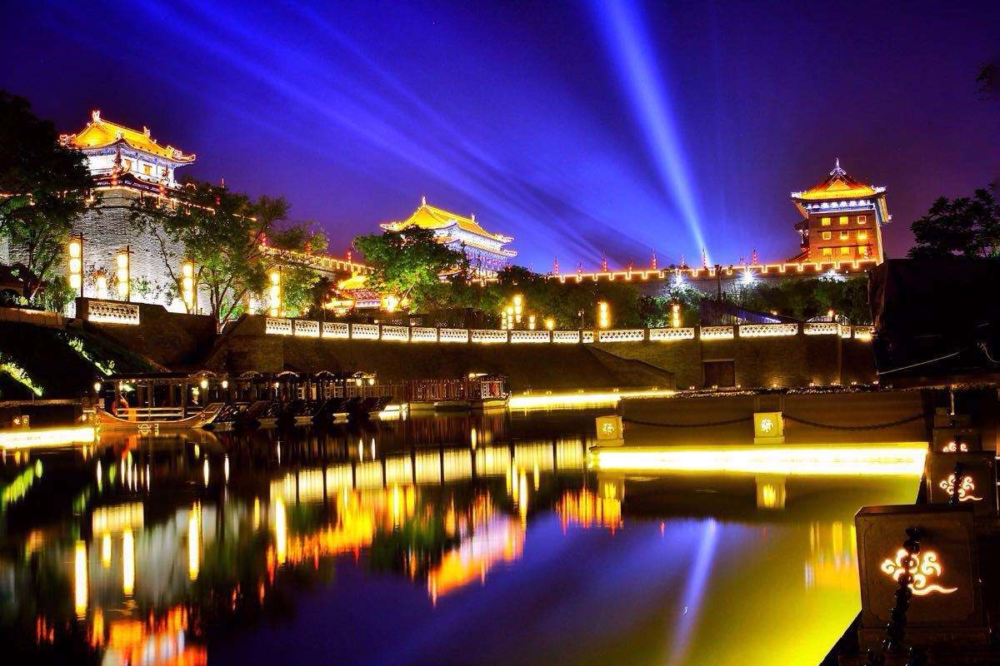

华清宫背山面渭，倚骊峰山势而筑，规模宏大，建筑壮丽，楼台馆殿，遍布骊山上下。初名”汤泉宫“，后改名温泉宫。更华清宫，因在骊山，又叫骊山宫，亦称骊宫、绣岭宫。华清宫始建于唐初，鼎盛于唐玄宗执政以后。唐玄宗悉心经营建起如此宏大的离宫，他几乎每年十月都要到此游幸。岁尽始还长安。安史乱后，政局突变，华清宫的游幸迅速衰落，唐朝以后各代皇帝已很少出游华清宫。后历代皇家有维修，到解放前已是汤池寥落，宫殿萧疏。解放后人民政府自1959年起进行了大规模的扩建